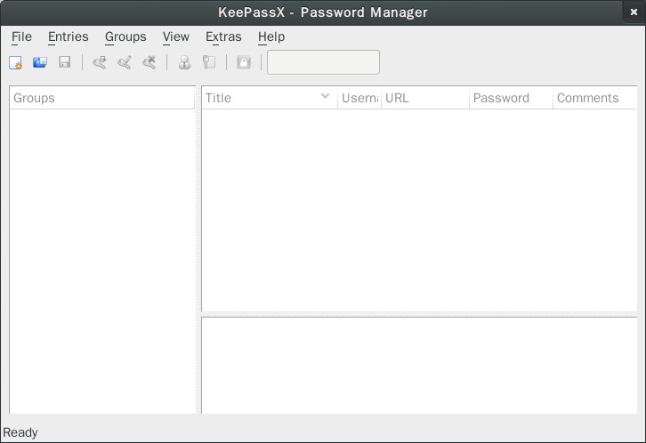
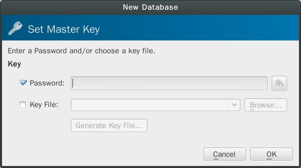
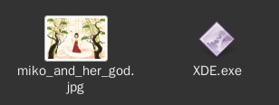
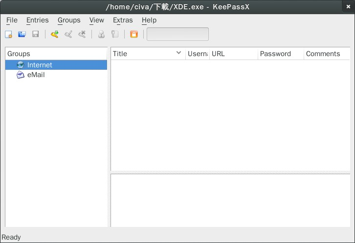
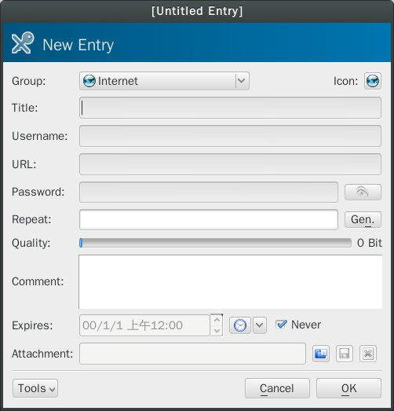
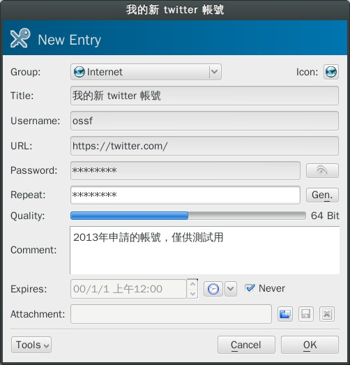
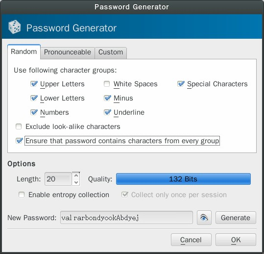
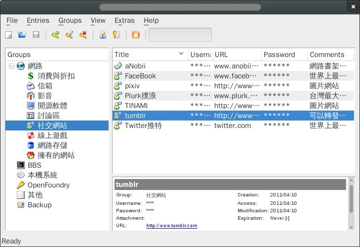

也紀念我們永遠的朋友 李士傑先生（Shih-Chieh Ilya Li）。
KeePassX －－ 簡單易用的密碼管理軟體
軟體名稱: KeePassX
介紹版本: 0.4.3
官網: https://www.keepassx.org/
授權: GPL-2.0
想密碼是件苦差事，記密碼當然也是。
簡單的密碼不安全，亂數密碼又記不起來；就算好不容易記起來，卻每個網站都要記一個。之後回頭再用時就全忘光。網站共用相同密碼又不安全，到底該怎麼辦才好呢？
最簡單的做法，當然就是把密碼全寫在筆記本上。然後再給筆記本加個牢靠大鎖了。
簡介
KeePassX 是一款簡單易用的本地密碼管理軟體。
網路上有好些密碼管理軟體，可以幫大家收集密碼長期保存。本回介紹的軟體是 KeePassX，因為有著類似名字的軟體還有好幾套，所以請別搞錯了。
為什麼是 KeePassX？其他密碼管理軟體又有什麼不好？嗯，其實也沒啥特別原因，不過這是我確實有在用的軟體，用了許久也沒發覺它有哪裡礙手，實用性一流，故就拿來介紹一下。實話實說，原本還想等到 KeePassX 2.0 推出後再和大家聊它；不過看來 2.0 還要開發很久……還是趕快介紹一下好了！這種東西早用早好啊。
KeePassX 是一款本機端密碼管理軟體，他會將密碼存在本機的一個檔案上。並用一個中控密碼加以保存。要使用它，您需要，也只需要記住一個夠強的中央密碼作為存取之用，剩下來的問題，KeePassX 會幫您搞定。
KeePassX 也支援自動產生亂數密碼。您甚至可以控制亂數密碼是否能發音、是否使用特定符號、是否同時運用大小寫、長度為何等等。
安裝
KeePassX 有 Linux、Windows 與 MAC OSX 版本，直接從這邊下載就裝吧。非常簡單。
目前最新版本是 0.4.3 版，而且已經保持這個版本很長時間了（讓我想提交翻譯都沒辦法）。如果您用 Linux，也可查查看您的套件庫從裡面裝，我玩過的所有發行版都有內建，算還蠻普遍的。
安裝後將其啟動，畫面如下所示。

▲ 圖1：空白的主畫面。
建立密碼檔
使使用 KeePassX，第一步就是要建立屬於您自己的密碼檔案，用來儲放您那數以百計的密碼。此檔案很小，就幾 KB 而已。
那就立刻新建吧。請點左上角的按鈕，會彈出新建密碼檔的小視窗。

▲ 圖2：新建密碼檔視窗。
小視窗中提供了兩個選項，您至少要選其中一個才能新建密碼檔。但也可以兩個都選。
兩個欄位中，第一欄位是讓您輸入「主密碼」用的，如果您有設定這個，則日後開啟本檔案時都得輸入主密碼才能將檔案打開，防止別人偷看。
而下方的第二欄位，則可選用一把鑰匙（密鑰）作為開檔使用。
此處所謂的鑰匙，其實也就是一個普通的檔案；這個檔案可以是任何類型、任何長度的檔案，不管 jpg、png、pdf 通通都可接受。唯一的要求是這個檔案日後不能被改變，因此最好別用 doc 或 odt 檔來用，不小心改到一點鑰匙就會完全失去作用。
如果您無意自己指定檔案，也可以按下方的 Create File 來產生一個最小所需的隨機檔案（大約 64 bytes）。如果您有用密鑰檔，則資料庫被暴力攻破的可能性會很小，但您當然也就得好好保管您的密鑰才行，如果沒有把密鑰檔帶著跑，密碼檔是打不開的。要是弄丟密鑰檔，也就等於您再也打不開密碼檔，故請特別小心。
推荐同時設定「檔案密鑰」＋「簡單的密碼」，如此用起來比較方便，也兼顧了安全性。
預設的密碼檔案副檔名是 .kdb，但是這樣一來目標太顯眼了，有心人可能會對它進行針對性攻擊，因此建議換個副檔名或索性不要副檔名，就把它偽裝成 exe 或 dll 之類的，KeePassX 一樣可以正確開啟……沒錯！不被攻擊就是最強大的防禦！

▲ 圖3：重新把檔案命名一下，這樣就很難看出這些檔案是密碼檔或密鑰檔了。就算對方把所有可能的檔案組合都試過一次，也還有手動輸入密碼這道防禦攔阻。
加入記錄項目

▲ 圖4：密碼檔案建好後的主畫面。
主檔案建立好後，那就在其中加入密碼吧。
請選 Add New Entry 或熱鍵 Ctrl + Y 叫出新建密碼視窗。

▲ 圖5：新建一個密碼項目。
比方說我申請了一個 twitter 帳號叫 ossf，密碼為 !@#$%^&* ，為防忘記那就這樣紀錄下去：

▲ 圖6：輸入密碼與相關內容。
其中 Comment 可用來輸入任意文字。我常常用來簡述這個密碼網站是幹嘛的，或是記錄一些重要的輔助訊息，比方說本來故意亂打卻被當作驗證訊息，三不五時就會要您重新輸入的生日號碼（巴哈先生，對，就是在說你！）。至於 Attachment 欄位則可放入任意檔案如金鑰檔等，隨您塞。
如此這般就輸入好了。
自動產生密碼
如果您想要新建一個密碼，又對自己想出來的密碼沒啥自信，那麼您也可以試著使用自動密碼產生功能。就按先前畫面中的 gen 按鈕……

▲ 圖7：自動密碼
您可以控制密碼的字數、使用字元集、發音可否、是否所有字元集都有用到等項目。
因為是隨機產生的，密碼強度都很高。不過也很難記憶很難打，因此最好搭配以下策略使用。
運用密碼的方法
密碼庫設定好後大約會變成這樣。

▲ 圖8：填滿內容的密碼庫
左邊是密碼群組，右邊是個別密碼項目。如何組成群組本文不論，有興趣請自己試吧；個人認為沒群組也無所謂，反正 KeePassX 的搜尋欄也相當好用，想找出特定密碼還是很簡單的。
您可以在選定個別項目後，按熱鍵使用各種功能。常用功能包括：
- 複製使用者名 ( Ctrl + B )
- 複製密碼 ( Ctrl + C )
- 打開網址 ( Ctrl + U )
- 雙擊打開密碼編輯視窗：可以察看或重新修改內容。
如此一來就能輕易複製貼上了（註一）。熱鍵不用強記，右鍵選單裡都有寫。
Auto Type
如果您使用 Linux 系統，KeePassX 還支援 AutoType 功能。具體用法是：
- 先將游標放到某個登入視窗的 user 欄位，然後……
- 打開 KeePassX，選中正確的密碼項目
- 再按 Ctrl + V
這樣就能自動填入用戶名稱與密碼，輕鬆完成登入手續。用起來非常方便。
其他零散功能
考慮到安全與方便之間每人平衡點不同，KeePassX 在設定頁面中有許多選項可以用，建議去翻翻。以下則要介紹……
- 您可以不關閉程式但鎖定資料庫。設定頁中有「閒置多少秒後自動鎖定」的選項。
- 是否要記憶密碼檔存放位置？是否每次啟動 KeePassX 時都自動讀檔？這些選項會讓使用更方便，但也會讓同電腦的其他使用者知道您的密碼檔是哪一個。當然，他們想偷看時還是得輸入密碼。
- 複製到剪貼簿時，設定多少秒之後剪貼簿會自動清空，以求儘量降低安全風險。
如此一來，密碼管理就可以省很多心思了。
註 1：注意，複製貼上時，您的帳號密碼可能會被「剪貼簿監控木馬」偷走；但是如果您用鍵盤手動敲打，密碼同樣可能被「鍵盤側錄木馬」偷走……總之只要電腦上有病毒，怎樣都無法安心，還請注意。
專欄總覽


E-Mail：contact@openfoundry.org Address：台北市南港區研究院路2段128號 中央研究院資訊科學研究所 . 隱私權條款. 使用條款